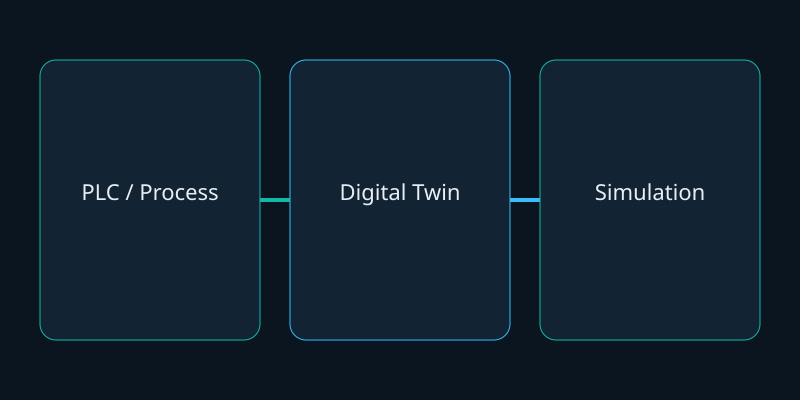

Objective
Create a virtual industrial workshop that can represent and simulate industrial processes.
Digital Twin · Simulation
Group project. A virtual industrial environment to represent and simulate industrial processes. Unconfirmed features are not listed.

Create a virtual industrial workshop that can represent and simulate industrial processes.
Physical process concepts → virtual environment → simulation / visualization of industrial systems.